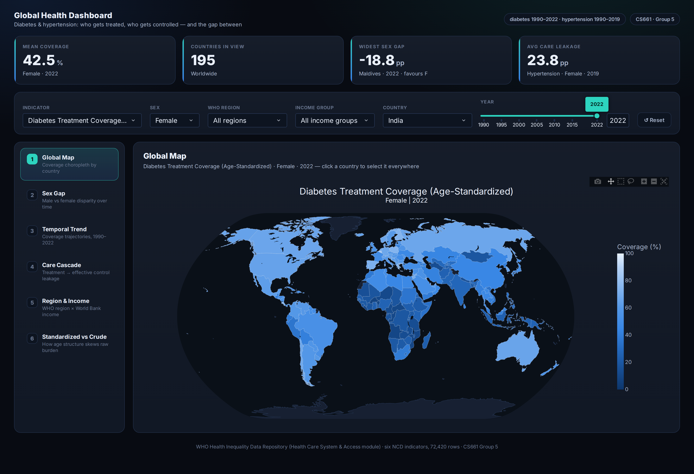
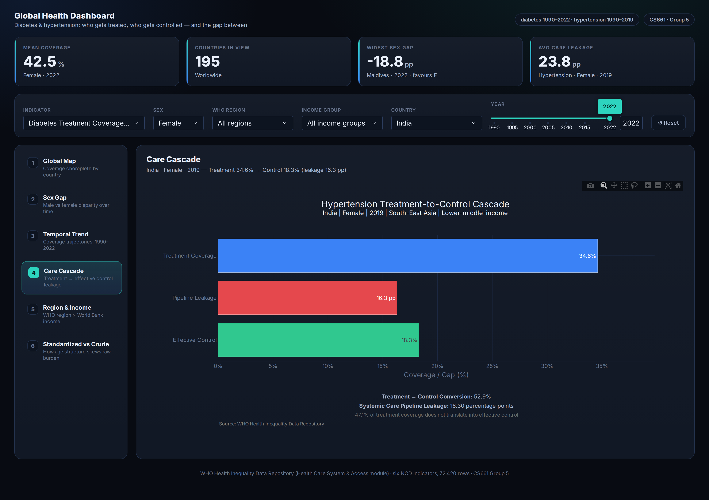
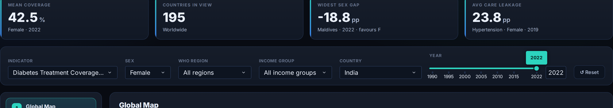
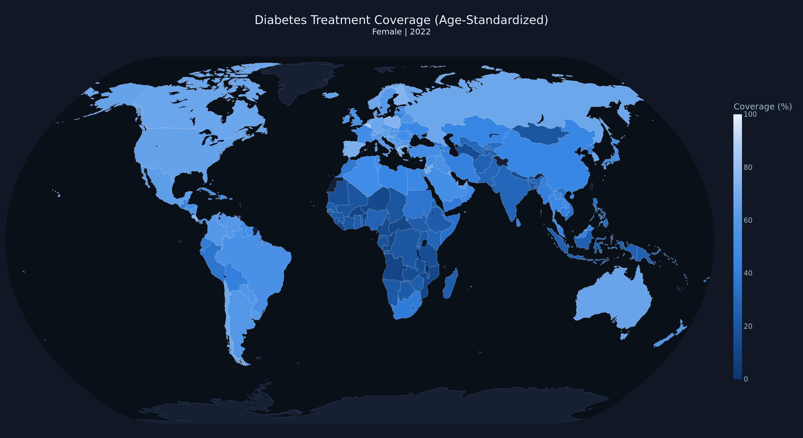
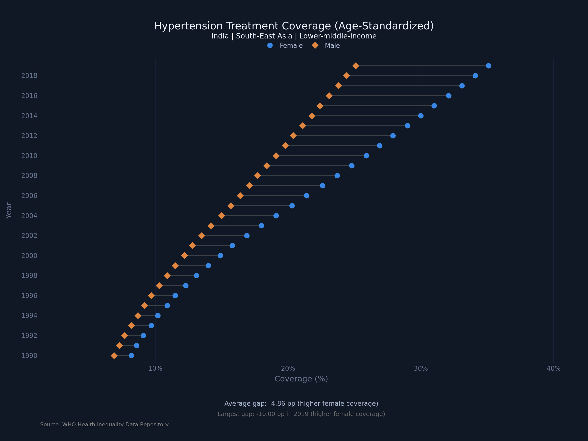
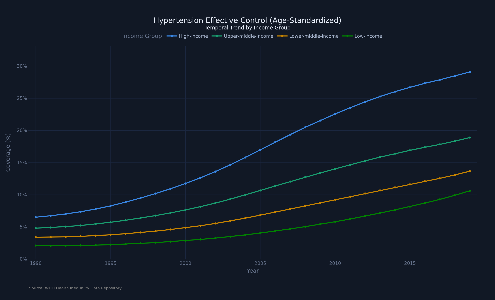
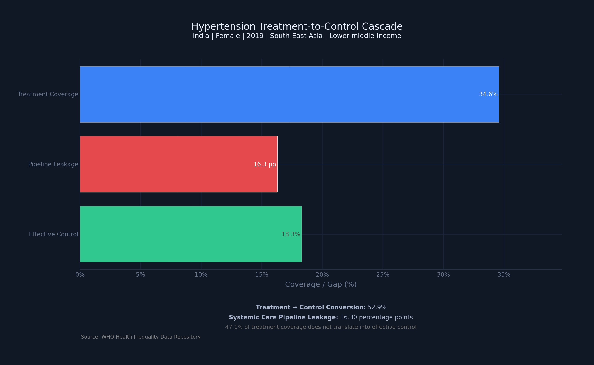
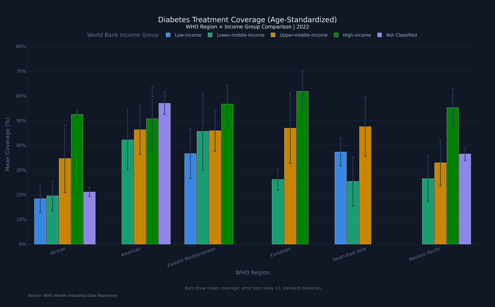
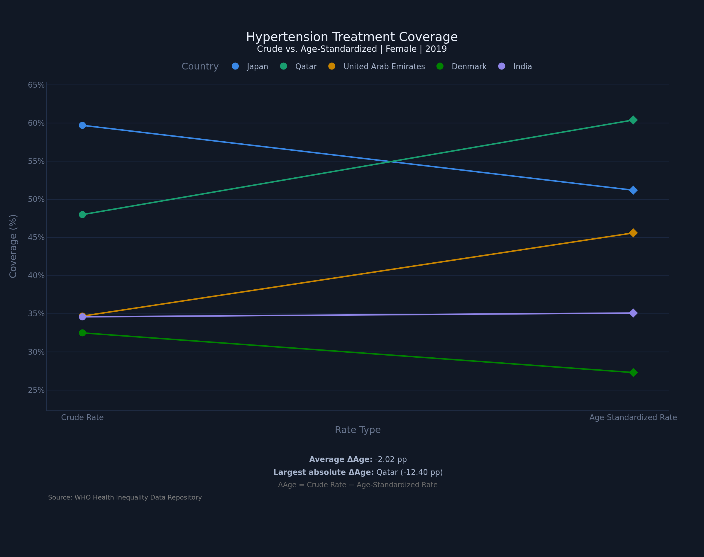

The complete codebase, prepared datasets, and documentation for this project are
available on GitHub. The dashboard is a single-page Dash application; it is run
with:
pip install -r requirements.txt
Run python app.py, then open http://127.0.0.1:8054/
The repository is organised so that the analytical layer and the presentation
layer are cleanly separated: data/ holds the eight prepared CSV tables,
visualizations/ holds six pure chart-building functions (each a
DataFrame → Figure transformation with no knowledge of the
application), and app.py holds the shared state, theming, layout, and
callback logic that binds them into one linked dashboard.
Introduction
Diabetes and hypertension are two of the most widespread chronic conditions in
the world, and managing them well depends less on a single dramatic intervention
than on whether a health system can do two things reliably: reach people with
treatment, and then keep their condition under control over the long term. These
are not the same achievement. A country can put a large share of its hypertensive
population on medication and still fail to bring most of them to a controlled
blood pressure — and the difference between those two numbers is one of the
most policy-relevant quantities in chronic disease care.
The World Health Organization tracks treatment coverage and effective control
coverage for these conditions across nearly every country in the world, broken
down by sex, and going back to 1990. This makes it one of the most reliable and
analytically rich slices of global health data available for visual analytics.
This project builds an interactive, web-based visual analytics system on top of
that data to explore a single question from six complementary angles:
where in the world are people being treated for diabetes and hypertension but
not having it effectively controlled, and how has that gap evolved and differed
by sex, region, and income level?
A deliberate decision shaped the entire project. The full WHO Health Inequality
Data Repository is large but sparse: many of its indicators cover only a handful of
countries per year, are missing national-level values entirely, or are
disaggregated along dimensions with very limited coverage. Rather than build an
impressive-looking system riddled with empty views, we audited every indicator for
completeness and scoped the project to the six that are verified complete. The
result is a smaller but fully populated analytical surface — every view in the
dashboard is backed by real data for every country and every year in range, and no
chart in this report is drawn on top of a gap.
Objective
The primary objective is to make global inequality in chronic disease care
legible — to take three decades of WHO estimates and turn them into an
interface where a public health student, researcher, or policy analyst can see not
just that inequality exists but where it lives and which
mechanism produces it. Specifically, the project aims to:
Map treatment and control coverage for diabetes and hypertension across
195 countries and three decades, and expose the size of the gap between the
best- and worst-served populations.
Quantify and visualise the male–female coverage gap, and determine
whether it is closing or widening.
Track how coverage has evolved from 1990 onward for countries, WHO regions,
and World Bank income groups, and test whether growth has been equitably
shared.
Expose the treatment-to-control cascade — the “leaky pipeline” in
which patients are treated but not effectively controlled — which is
only measurable because both indicators exist for the same country-year.
Separate the effect of a population’s age structure from the genuine
performance of its care system, by comparing crude against age-standardized
rates.
Deliver all of the above as one linked dashboard, in which a selection
made in any view propagates to every other view, rather than as a set of
independent charts.
Dataset and Preprocessing
Source and the Scoping Decision
The data source is the WHO Health Inequality Data Repository (Health Care System
and Access module), published by the WHO Global Health Observatory. The full
repository spans 197 countries, the years 1980–2023, and 33 indicators, at
roughly 100,000 rows.
We audited every one of those 33 indicators for completeness before writing a
line of visualization code. Most turned out to be unusable for a
country-comparative dashboard: financial-hardship and health-workforce indicators
cover only a handful of countries per year; several have no national-level values
at all; and others are only broken down by dimensions (wealth quintile, age band)
whose country coverage is very thin. Building a world map on any of them would
have produced a chart that was mostly empty.
We therefore scoped the project to the six indicators below — all from the
Non-Communicable Disease (NCD) family — which we verified to have
zero missing estimates, near-complete country coverage, and continuous
multi-decade year coverage. Together they account for 72,420 country–year–sex
estimates, the dense and reliable core of the repository.
The six in-scope indicators, verified complete. Counts are from the
prepared dataset itself, not from the repository documentation.
Every estimate carries a Male/Female sex breakdown, a WHO region (six regions:
African, Americas, Eastern Mediterranean, European, South-East Asia, Western
Pacific), and a World Bank income group (Low, Lower-middle, Upper-middle,
High-income; five small territories are unclassified). The two indicator families
end in different years — diabetes runs to 2022, hypertension to 2019 —
which is a small asymmetry with real consequences for the interface, discussed in
Section 6.3.
Derived Metrics
Three derived quantities do the analytical work in this project. Each was
computed during preprocessing and stored alongside the raw values, so that the
visualization layer never has to recompute them:
Absolute Sex Equity Gap (ΔSex) = RateMale −
RateFemale. A negative value means coverage is higher for women.
Systemic Care Pipeline Leakage (ΔLeak) =
Treatmentcrude − Controlcrude (hypertension). The
share of the population treated but not effectively controlled — the
clinical drop-off.
Demographic Variance Offset (ΔAge) = Ratecrude −
Rateage-standardized. How much a country’s raw figure is inflated or
deflated purely by the age structure of its population.
ΔLeak in particular is only computable because the repository publishes
treatment and effective control for the same country, year, and sex. That
coincidence is what makes the cascade view (Section 7.4) possible, and it is the
single most valuable property of this dataset.
Prepared Analytical Tables
Rather than have every view filter one enormous table at request time, the
preprocessing stage materialises eight task-shaped CSV tables. Each is pre-shaped
for the view that consumes it — long format where a view needs to filter,
wide format where it needs to pair columns, pre-aggregated where it needs group
statistics.
The eight prepared tables and the views they serve.
Table
Rows
Shape / contents
Used by
map_data.csv
72,420
Long: one row per country×year×sex×indicator
Task 1
sex_gap_data.csv
36,210
Male/Female pivoted side by side, plus ΔSex
Task 2
trend_country.csv
12,870
Wide: one column per indicator code
Tasks 3, 6
trend_region.csv
1,116
Region × year × indicator means
Task 3
trend_income.csv
930
Income group × year × indicator means
Task 3
cascade_data.csv
11,640
Hypertension treatment + control + ΔLeak
Task 4
region_income_summary.csv
4,278
Region × income cells: mean, median, std, count
Task 5
age_vs_crude.csv
36,150
Crude/standardized pairs, plus ΔAge
Task 6
Preprocessing also standardised country naming to ISO-3 codes (so the choropleth
never silently drops a country), verified that every indicator is on the same 0–100
percentage scale, and confirmed the zero-missing-value property that motivated the
scoping decision in the first place.
Tools and Technologies Used
The system is built entirely in Python, with the visualization and application
layers both served from one process:
Dash 4.4 (Flask) — the web application framework. Provides the
reactive callback graph that keeps the six views synchronised with the shared
filter state, and serves the single-page interface.
Plotly 6.9 — all six visualizations. Chosen over D3.js (which the
proposal had listed as an option) because every chart type the project needed
— choropleth, dumbbell, multi-line time series, horizontal cascade,
grouped bars with error bars, paired slope chart — was expressible
directly in Plotly’s graph objects, and because Plotly figures arrive in the
browser with hover, zoom, pan, and click events already wired to Dash. Writing
custom D3 components would have added a JavaScript build step and a second
event system for no analytical gain.
pandas 3.0 and NumPy 2.5 — data aggregation, the derived-metric
computations, and all in-callback filtering.
Kaleido — static export of the Plotly figures reproduced in this
report, so that the figures shown here are rendered by the same code paths
the live dashboard uses.
Git / GitHub — version control across the four sub-teams.
Two technologies named in the proposal were deliberately dropped. D3.js was
not needed, for the reasons above. SQLite was listed as an optional storage
layer, but at 72,420 rows the entire working set fits comfortably in memory as
pandas DataFrames; introducing a database would have added a query layer and a
serialisation boundary without measurably improving response time. Instead, repeat
requests are served from an in-process cache (Section 6.6). Both decisions are
revisited in Section 11.
System Design and Interaction Model
The proposal committed to “a single-page, web-based interactive dashboard (not a
long scrolling page)... all connected through shared filters... Selections made in
one view will update the other linked views.” That commitment, rather than the
individual charts, is what drove the architecture. This section describes what was
built to honour it.

The dashboard interface. A brand header and live KPI strip sit above a
sticky command bar carrying the six shared filters; a left navigation rail
switches between the six analytical views without a page reload. Shown here in the
default state: Task 1, diabetes treatment coverage (age-standardized), female,
2022.
Architecture
The code is split along a strict boundary. The visualizations/
package contains six pure functions — create_global_map(),
create_sex_gap_chart(), create_temporal_trend_chart(),
create_treatment_control_cascade(),
create_regional_income_comparison(), and
create_age_standardized_crude_chart(). Each takes a DataFrame and a
handful of scalar parameters and returns a Plotly figure. None of them import Dash,
know that a dashboard exists, or read global state. Each validates its own inputs
and raises on an impossible selection rather than silently returning an empty chart.
Above them, app.py supplies everything the charts deliberately do not
know about: the shared filter state, the cross-filter logic, the dark theme, the
caching layer, and the layout. This separation is what allowed four sub-teams to work
in parallel — the visualization developers could build and test chart functions
against a CSV without the application existing, and the frontend developers could
restyle and re-link the entire interface without touching a single chart function.
Shared Filter State and Cross-Filtering
All six views read from exactly one source of truth: a dcc.Store
holding six fields — indicator, sex, WHO region, income group, country, and
year. A single reducer callback owns that store. It takes as inputs both the six
controls in the command bar and the click events from five of the six charts,
merges them, and writes the resulting state back out. Because every view’s callback
listens to the store rather than to the individual controls, adding a new
cross-filter interaction never requires touching the views.
The cross-filter behaviours this produces are:
Click a country on the map→ sets the global country, which
immediately re-draws the sex-gap chart, the care cascade, and the
crude-vs-standardized comparison for that country.
Click a bar in the region×income view→ sets both the WHO
region and the income group, narrowing the country pool everywhere.
Click a point on a trend line→ sets the year (and, at country
level, the country), so a moment of interest in a time series becomes the
selected year across the whole dashboard.
Click a year in the sex-gap chart→ sets the year.
Region and income act as a scope: they narrow the pool of countries the
rest of the dashboard may consider. When the scope changes, the country dropdown is
re-populated, and if the currently selected country has fallen outside the new scope
it is automatically replaced with a sensible in-scope one rather than leaving the
dashboard in an impossible state.

The same filter bar, a different view. The country here
(India) was not typed in — it was inherited from the shared state. Every view
reads the same six-field store, so a country selected on the map in Figure 1 is
already selected here.
Nearest-Year Fallback
Because the diabetes indicators run to 2022 and the hypertension indicators stop
at 2019, a naive implementation has an ugly failure mode: a user viewing diabetes
data in 2022 who switches the indicator to hypertension would get a blank chart, for
a reason the interface never explains. Rather than clamp the year slider (which would
lose the user’s position) or blank the view, the dashboard snaps to the
nearest available year for the selected indicator and states plainly in the
view’s subtitle that it has done so: “no 2022 data; showing nearest year.” The same
helper backs the KPI strip, so the headline numbers never disagree with the chart
below them. This is a small piece of logic, but it is the difference between an
interface that feels broken and one that feels considered.
The KPI Insight Strip
Four headline numbers sit above the views and recompute on every filter change:
mean coverage across the countries currently in scope, the number of countries in
scope, the widest sex gap in scope (with the country and direction that produced it),
and the mean treatment-to-control leakage. Their purpose is to give the current
selection a summary before the user has read the chart — and, because they are
computed over the scope rather than the single selected country, they provide
the context against which the selected country should be judged.

The KPI strip and the sticky command bar. Every number shown is
recomputed from the current scope; here, worldwide, female, 2022.
Visual Design and Accessibility
The interface uses one cohesive dark theme, applied to the charts after
they are built, so the chart functions stay presentation-neutral. Three choices are
worth recording:
Colour-blind-safe categorical palette. The eight-colour series palette
was chosen and ordered so that adjacent series remain distinguishable under
common colour-vision deficiencies; every categorical chart is additionally
paired with a legend rather than relying on colour alone.
Semantic colour in the cascade. Task 4 is the one view where colour
encodes state rather than identity: treatment is a neutral blue,
leakage is red (a loss), and effective control is green (the desired outcome).
Using the categorical palette here would have thrown away meaning.
A sequential ramp for the map. The choropleth uses a single-hue
dark-navy-to-bright-blue ramp on a fixed 0–100 domain, so that colours are
comparable across years and indicators — animating the year slider shows
real change, not a rescaled legend.
Performance
All eight tables are loaded once at start-up and held in memory. Each of the six
figure builders is wrapped in an LRU cache keyed by the exact filter tuple that
produced it, so dragging the year slider back and forth, or returning to a view
already visited, is served from cache rather than re-filtering the DataFrame and
re-building the figure. At this data size the result is an interface that responds
to a filter change without a perceptible pause.
Visualization Tasks and Insights
The six views below are the analytical core of the project. Each is presented with
the same structure: what the task does, what information it encodes, what we actually
observed in the data, what can be inferred from it, and what it implies in the real
world. Every number quoted in these sections was computed from the prepared tables
described in Section 4.
Global Coverage Map
Task Overview
An interactive world choropleth showing the value of the selected indicator for
every country, for a chosen year and sex. The year slider spans the full range of the
selected indicator, so dragging it animates three decades of change. Clicking any
country promotes it to the global country selection, making the map the primary entry
point into the rest of the dashboard: the user starts with a global overview, spots an
outlier, clicks it, and every other view is now about that country.
Information Represented
Colour: coverage (%) on a fixed 0–100 sequential scale, so colour is
comparable across years and indicators.
Geography: 195 countries, keyed by ISO-3 code.
Hover: exact coverage, WHO region, and World Bank income group.
Filters: indicator (all six), sex, year; plus the region and income scope,
which grey the map down to the countries under consideration.

Diabetes treatment coverage (age-standardized), female, 2022. The
north–south gradient is immediate: Europe and the Americas are pale, sub-Saharan
Africa is uniformly dark.
Observed Trends
For diabetes treatment (age-standardized, female, 2022) the global mean is
42.5%, but the spread is enormous: from 8.5% in Burkina Faso to
86.0% in Belgium — a 10.2× ratio between the
worst- and best-served countries.
The eight lowest-coverage countries are all in the WHO African region
(Burkina Faso, Angola, Liberia, Benin, Mozambique, Central African Republic,
Congo, Niger — all at or below 12%). The top of the table is European,
with Costa Rica and Jordan the notable non-European entrants.
Regional means separate cleanly: European 56.9%, Americas 51.5%, Eastern
Mediterranean 47.4%, Western Pacific 39.1%, South-East Asia 33.6%, African
21.5%.
The income gradient is even cleaner than the geographic one: high-income
59.8%, upper-middle 44.5%, lower-middle 29.0%, low-income 22.7%.
Switching the indicator to hypertension effective control (2019) collapses
the whole map downward: the global mean falls to just 23.0% for women,
ranging from 5.1% (Indonesia) to 57.3% (Republic of Korea). For men it is
lower still, at 16.4%.
Inference and Insights
Chronic-disease care is not merely unequal — it is stratified. The
ordering of regions and of income groups is stable across indicators, which
means we are not looking at noise or at a handful of outliers but at a
structural gradient.
The single most important observation is what happens when the indicator is
switched from treatment to effective control: the entire world map gets
darker. A global treatment mean in the mid-40s becomes a global control mean in
the low-20s. Being treated and being controlled are demonstrably different
achievements, which is precisely the gap Task 4 exists to measure.
Even the best-performing country in the world controls only 57% of its
hypertensive women. There is no country where this problem is solved.
Real-World Implications
Global health funders can use the map to target the countries where
absolute coverage is lowest — and the concentration of the bottom of the
distribution in one WHO region makes that targeting unusually clear-cut.
National ministries can locate themselves against regional and income
peers rather than against a global average that mixes very different systems.
The control-coverage map is the more actionable of the two. A country
with high treatment and low control does not need a wider net — it needs
better follow-up, adherence support, and titration. That is a different budget
line, and the map makes the distinction visible at a glance.
Sex Gap Analysis
Task Overview
A dumbbell chart comparing male and female coverage for one country across every
year in the indicator’s range. Each horizontal connector spans the gap for a single
year; the length of the connector is the inequity. Plotting all years at once
— rather than one year at a time — means the chart answers not only “how
big is the gap?” but “is it closing?”
Information Represented
X-axis: coverage (%), on a dynamically zoomed range so that a 2-point gap
is still visible rather than being crushed against a 0–100 axis.
Y-axis: year, one row per year.
Circle marker: female coverage. Diamond marker: male coverage.
Connector length: ΔSex = Male − Female.
Footer annotations: the mean gap across all years and the largest single-year
gap, each labelled with the direction it favours.

Hypertension treatment coverage (age-standardized), India, 1990–2019.
Female coverage (circles) sits to the right of male coverage (diamonds) in every
single year, and the gap widens over time.
Observed Trends
The male–female gap in hypertension treatment is large and almost
universal. In 2019 the mean ΔSex was −11.4 pp, and coverage
was higher for women in 190 of 195 countries (97%). Only Canada (+5.2 pp),
Norway, Kiribati, and Austria showed any male advantage at all.
The same pattern holds for hypertension effective control
(mean −6.6 pp; women ahead in 186 of 195 countries) and, more weakly, for
diabetes treatment (mean −2.6 pp; women ahead in 131 of 195, or 67%).
The extremes are dramatic: Saint Lucia (−28.0 pp), Jamaica (−26.4),
Ecuador (−25.8) and Peru (−24.8) for hypertension treatment; the Maldives
(−18.8 pp) for diabetes.
The gap is not closing — it is widening. For hypertension effective
control, the mean gap grew from −2.6 pp in 1990 to −6.6 pp
in 2019. For hypertension treatment it went from −9.9 to −11.4 pp.
Thirty years of progress have not narrowed the sex gap in either direction; they
have stretched it.
Regionally, the Americas show by far the widest female advantage
(−17.6 pp for hypertension treatment). The African region is the only one
where diabetes treatment slightly favours men (+1.2 pp).
India is a counter-example. Its diabetes treatment gap favours men
(mean +2.6 pp), but it is one of the few gaps in the dataset that is
genuinely narrowing: from +3.7 pp in 1990 to +1.4 pp in 2022.
Inference and Insights
A sex gap this consistent across 97% of countries cannot be explained by any
individual country’s culture or health policy. It points to a mechanism that
operates almost everywhere — most plausibly, differential contact
with the health system. Women in most countries interact with primary and
reproductive health services far more often than men do, and each contact is an
opportunity for an incidental blood-pressure measurement and a diagnosis.
Men are not being denied treatment so much as never being diagnosed.
This reframes the finding. The inequity is not that women are over-treated; it
is that men are systematically under-diagnosed, and the coverage gap is the
visible shadow of an invisible diagnostic gap.
The widening trend supports this reading. As health systems have expanded since
1990, they have expanded along existing channels — and those channels reach
women. Growth has amplified the asymmetry rather than correcting it.
That the gap is much smaller for diabetes (−2.6 pp) than for hypertension
(−11.4 pp) is consistent with this: diabetes is more likely to become
symptomatic and force a clinical encounter, whereas hypertension is asymptomatic
and therefore relies entirely on opportunistic screening.
Real-World Implications
Screening programmes should be designed to reach men where they already are
— workplaces, pharmacies, sporting venues — rather than waiting for them
to present at clinics they rarely visit.
Health ministries should treat a large negative ΔSex as a diagnostic
coverage warning, not as evidence of successful women’s health programming.
Equity monitoring frameworks that report only national averages will miss
this entirely: a country can raise its headline coverage while leaving half its
population’s diagnosis rate untouched.
Temporal Trend Analysis
Task Overview
A multi-line time-series chart tracking coverage from 1990 onward. The view
supports three levels of aggregation through a “Compare by” control — country,
WHO region, or World Bank income group — so the same chart can answer “how has
India done?” and “have poor countries caught up?” without changing views. Clicking a
point on any line sets the global year, feeding that moment back into the rest of the
dashboard.
Information Represented
X-axis: year (1990–2022 for diabetes, 1990–2019 for hypertension).
Y-axis: coverage (%), auto-ranged to the visible series.
One line per entity (up to several countries, six WHO regions, or four
income groups), with a unified hover that reads every series at a given year at once.
At country level the sex filter applies; the regional and income tables are
pre-aggregated across sex.

Hypertension effective control (age-standardized) by World Bank income
group, 1990–2019. All four groups rise — and visibly fan apart. The vertical
distance between the top and bottom lines in 2019 is more than four times what it
was in 1990.
Observed Trends
Everything improved. Every region and every income group ends higher than
it started, for all three indicator families. Global diabetes treatment coverage
rose from a mean of 30.2% in 1990 to 42.5% in 2022.
The relative gains were largest at the bottom. Hypertension effective
control in the African region grew by 437% in relative terms
(2.2% → 11.7%); in low-income countries it grew 405% (2.1% → 10.6%).
A naive reading of percentage growth would conclude that the poorest countries
are catching up fastest.
The absolute gaps widened in every single case. This is the central
finding of the view:
Change in the high-income minus low-income coverage gap, 1990 to the latest
available year. Every gap is larger today than it was in 1990.
Indicator
Gap in 1990
Gap in final year
Change
Diabetes treatment (age-std.), to 2022
20.4 pp
35.2 pp
+14.8 pp
Hypertension treatment (age-std.), to 2019
18.2 pp
28.0 pp
+9.7 pp
Hypertension effective control (age-std.), to 2019
4.4 pp
18.5 pp
+14.1 pp
By region, European diabetes treatment coverage gained +21.7 pp
(34.0% → 55.7%) while the African region gained only +4.9 pp
(17.2% → 22.1%) over the same 32 years.
Hypertension effective control in high-income countries gained +22.6 pp;
low-income countries gained +8.5 pp.
Inference and Insights
Key finding. Growth rates converged while levels
diverged. The poorest countries improved fastest in percentage terms and yet
fell further behind in absolute terms — because a 400% gain on a base of
2% is worth 8 percentage points, while a 350% gain on a base of 6.5% is worth 23.
Percentage growth is a flattering and misleading measure of progress in global health;
the honest one is the percentage-point gap, and by that measure inequality in chronic
disease care has grown steadily worse since 1990.
This is why the view exposes both the lines and the levels rather than plotting
indexed growth. An indexed chart would have shown the African region as the
global success story of the last three decades. The un-indexed chart shows it
falling further behind every year.
The effect is strongest for effective control — the hardest of the three
indicators to deliver, and the one that most depends on a durable, funded,
follow-up-capable health system rather than on a one-off intervention. Gaps widen
fastest where sustained system capacity matters most.
Real-World Implications
Progress reporting that leads with percentage growth is actively misleading,
and this view makes the distortion visible. Global health targets should be set in
percentage points, not percentage improvements.
Convergence will not happen on its own. Thirty years of universal improvement
have produced a wider gap, not a narrower one; closing it requires
disproportionate, targeted investment rather than a rising tide.
For the SDG 3.4 agenda (reducing premature NCD mortality by a third), the
trajectory of the low-income line is the binding constraint, and it is the flattest
line on the chart.
Treatment-to-Control Cascade
Task Overview
This is the view the whole project was scoped around. For a chosen country, year,
and sex, it places hypertension treatment coverage directly against
effective control coverage, and renders the difference between them as an
explicit third bar: the leakage. It answers a question that neither indicator can
answer alone — of the people this health system has reached, how many has it
actually helped?
Information Represented
Three horizontal bars: treatment coverage (%), pipeline leakage (pp), and
effective control (%).
Semantic colour: blue = treated (neutral), red = leaked (loss),
green = controlled (the desired outcome).
Derived footer metrics: the treatment-to-control conversion rate
(control ÷ treatment) and the leakage rate (the share of treatment
that fails to convert).
The country is normally inherited from a click on the map rather than typed in.

Hypertension treatment-to-control cascade, India, female, 2019. Of 34.6%
treatment coverage, only 18.3 percentage points survive as effective control —
a 16.3 pp leak, meaning 47.1% of treatment coverage does not translate into a
controlled patient.
Observed Trends
Globally, in 2019, mean female hypertension treatment coverage was 46.9%
and mean effective control was 23.1% — a mean leakage of
23.8 pp. The mean country-level conversion rate is 47.5%:
fewer than half of all treated women reach control. For men it is worse
still, at 44.6%.
Conversion varies enormously between health systems. Canada converts
79% of treated women (and 84% of treated men) into controlled patients;
the Republic of Korea 74%, Germany and Iceland 72%. At the other end, the
Republic of Moldova converts 21%, Belarus 23%, Kyrgyzstan 24%, and
Indonesia 25%.
The largest absolute leaks are concentrated in a striking geographic cluster:
Belarus (46.5 pp), Ukraine (45.3), Latvia (41.5), Lithuania (41.3), and Croatia
(40.9) — post-Soviet health systems that treat a great many people and
control comparatively few of them.
India (female, 2019) sits close to the global median: 34.6% treated, 18.3%
controlled, a 16.3 pp leak and a 52.9% conversion rate.
Over time, the pipeline has improved: in 1990 global mean treatment was 24.8%
and control 6.0% (a conversion rate of roughly 24%); by 2019 treatment had
nearly doubled to 46.9% and control had nearly quadrupled to 23.1%.
Inference and Insights
The leakage paradox. High-income countries have the
largest absolute leak (26.5 pp, versus 15.6 pp in low-income countries) and
simultaneously the best conversion rate (54.7% versus 44.2%). These are not in
conflict — they are arithmetic. Leakage measured in percentage points scales with
how many people you treat in the first place, so a country that treats almost nobody
cannot leak much. Ranking health systems by absolute leakage would therefore reward
the countries doing the least. The conversion rate is the fair comparison, and
the dashboard reports both precisely so that the naive metric cannot be read in
isolation.
By that fair measure, the worst performers are not the poorest countries but the
upper-middle-income ones (43.7% conversion — the lowest of any income
group, below even low-income countries at 44.2%). These are systems that have
successfully scaled up prescribing without scaling up the follow-up,
monitoring, and titration that convert a prescription into a controlled patient.
The post-Soviet cluster is the clearest instance of this: high treatment reach
inherited from a strong primary-care tradition, combined with weak chronic-disease
follow-up, produces the worst leaks in the world.
The finding generalises: getting a patient onto medication is the easy half of
the problem. Globally, more than half of all the effort spent on treating
hypertension does not currently result in a controlled patient.
Real-World Implications
For health ministries: a large leak is a signal to invest in adherence
support, dose titration protocols, and routine follow-up — not in wider
prescribing. Those are cheaper interventions than expanding treatment reach, and
this view identifies exactly which countries would benefit most from them.
For global health targets: treatment-coverage targets can be met while
health outcomes barely move. Control coverage is the outcome that matters, and it
should be the number that is targeted.
For clinicians and system designers: the countries with the best conversion
rates (Canada, Republic of Korea, Germany, Iceland, Portugal) are the natural
places to look for transferable follow-up models.
Regional and Income-Group Comparison
Task Overview
A grouped bar chart crossing the six WHO regions against the four World Bank income
groups, for a chosen indicator and year. Its purpose is to disentangle two explanations
that are usually confounded in global health commentary: is a country’s coverage
determined by where it is, or by how rich it is? Error bars carry the
within-cell standard deviation, so the chart also shows how much internal disagreement
each bar is hiding.
Information Represented
X-axis: WHO region. Bar groups: World Bank income group, ordered
low to high.
Bar height: mean coverage for the countries in that region×income cell.
Error bars: ±1 standard deviation within the cell.
Hover: mean, median, standard deviation, and the number of countries in the
cell — so a bar backed by two countries cannot be mistaken for one backed
by twenty.
Clicking a bar sets both the region and the income scope for the whole dashboard.

Diabetes treatment coverage (age-standardized), 2022, by WHO region and
World Bank income group. Within every region, the bars climb with income — the
income gradient survives geography.
Observed Trends
The income gradient holds inside every single region. In no region does a
poorer income group out-perform a richer one for diabetes treatment.
The gradient within the African region is larger than the gap
between most regions: African low-income countries average 18.4%,
African high-income countries average 52.6% — a spread of
34.2 pp inside one region.
Cross-region comparisons at matched income levels are the revealing ones. A
high-income African country (52.6%) has roughly double the coverage of a
lower-middle-income European country (26.2%). Geography loses; income wins.
Overall, high-income countries average 55.5% against low-income countries’
30.8% — a 1.8× ratio.
The error bars are large. Mean within-cell standard deviation is 8.4 pp, and
the most heterogeneous cell (Eastern Mediterranean, lower-middle-income, 16
countries) has a standard deviation of 15.7 pp — wider than the difference
between several regional means.
Inference and Insights
Income group is a stronger predictor of chronic-disease care than WHO region
is. The regional ordering seen on the map in Task 1 is, to a substantial degree,
an income ordering wearing a geographic costume — the African region looks
worst partly because it contains most of the world’s low-income countries.
But region is not merely a proxy for income, and the chart shows where it is not.
African low-income countries (18.4%) still trail Eastern Mediterranean low-income
countries (36.7%) by a wide margin at the same income level, which means something
other than national income — health system structure, conflict, workforce
density — is doing real work there.
The error bars are the honest part of this chart. With a within-cell standard
deviation of 8–16 percentage points, the mean of a region×income cell is a
weak summary of the countries inside it. Any policy that treats “lower-middle-income
Africa” as a homogeneous target is aggregating over countries that differ from each
other by more than the group differs from its neighbours. This is the strongest
argument in the dashboard for drilling down to the country level — which is
what clicking a bar does.
Real-World Implications
Development finance keyed to income classification is, on this evidence,
better aligned with need than aid keyed to region.
Regional health bodies should not benchmark member states against a regional
mean; a country should be compared against its income peers, which this view makes
possible in one click.
The heterogeneity within cells is a warning to anyone building a
one-size-fits-all regional intervention: the average country in a cell may not
exist.
Age-Standardized vs. Crude Rate Comparison
Task Overview
Every indicator in this dataset exists in two forms: a crude rate, which
reports what is actually happening in the country’s real population, and an
age-standardized rate, which re-weights that population to a common reference
age structure so that countries can be compared fairly. This view puts the two side by
side as a paired slope chart. A steep line means a country’s raw numbers are being
substantially distorted by its demography; a flat line means its crude figure can be
taken at face value.
Information Represented
Two x-positions: crude rate (circle) and age-standardized rate (diamond).
One coloured line per country, connecting its two values — the slope
is ΔAge = crude − standardized.
Footer: the mean ΔAge across the selected countries and the single
largest absolute offset.
The view keeps its own “indicator family” control, because it pairs crude and
standardized columns rather than treating them as separate indicators.

Hypertension treatment coverage, female, 2019. Japan and Qatar cross:
by crude rates Japan (59.7%) leads Qatar (48.0%) comfortably, but once age structure is
controlled for, Qatar (60.4%) overtakes Japan (51.2%). The two countries swap places
purely because of demography.
Observed Trends
Globally the two measures agree closely — the correlation between crude and
age-standardized diabetes treatment coverage across 195 countries is
r = 0.994. For most countries the choice of measure barely matters.
But for demographic outliers it matters enormously. The Gulf states have the
largest negative offsets — Qatar (−12.4 pp for hypertension treatment),
the UAE (−10.9), Oman (−7.1), Kuwait (−6.3) — because their
populations are dominated by young migrant workers, which drags the crude rate far
below the age-standardized one.
The largest positive offsets belong to aged populations: Japan
(+8.5 pp), Lithuania (+5.3), Latvia (+5.3), Bosnia and Herzegovina (+5.3),
Denmark (+5.2), Sweden (+5.1). Their crude rates flatter them.
The rank consequences are severe. Ranking all 195 countries by hypertension
treatment coverage, Qatar sits at #43 on age-standardized rates and #97 on
crude rates — a 54-place swing. Japan moves 28 places in the opposite
direction (#87 standardized → #58 crude). Across the dataset,
25 of 195 countries shift by 10 or more rank places and 68 shift by 5 or
more, depending only on which of the two equally valid measures is used.
The pattern is systematic by region and income: the European region averages
+3.0 pp (older), the Eastern Mediterranean −3.6 pp (younger);
high-income countries +1.8 pp, low-income countries −1.6 pp.
Inference and Insights
Age standardization is doing exactly the job it is supposed to do — and this
view makes the size of that job visible. The crude rate is not “wrong”: it is the
real service load a country’s health system must actually carry. The
age-standardized rate is not “right” either: it describes a population that does
not exist. They answer different questions, and conflating them produces
confidently wrong conclusions.
The correct use of each is straightforward once separated. To plan capacity
— how many people need treating in Japan next year — use the crude rate.
To judge health-system performance — is Qatar’s system doing better than
Japan’s? — use the age-standardized rate. Japan’s high crude coverage is
substantially a consequence of being old, not of being good.
Because the high correlation (r = 0.994) makes the two measures look interchangeable
in aggregate, the risk of using the wrong one is easy to miss — and it is
concentrated precisely in the countries that are most demographically unusual, which
are often the ones being singled out for comparison in the first place.
Real-World Implications
League tables of health-system performance must use age-standardized rates.
A ranking built on crude rates would penalise Qatar by 54 places for the demographic
accident of having a young workforce.
Budget and workforce planning must use crude rates. Japan’s clinics face the
crude caseload, not the standardized one.
For analysts and journalists: any cross-country chronic-disease comparison
that does not state which of the two measures it uses should be treated as
unreliable, because the choice can reorder the table.
Cross-Cutting Findings
The six views were built as separate tasks, but read together they tell one
coherent story about how chronic disease care fails, and the linked dashboard is what
makes reading them together possible. Four findings cut across the whole system:
The world treats far more people than it did in 1990, and the gap between rich
and poor countries is wider than ever. Universal improvement and worsening
inequality are not contradictory: they are what happens when growth is proportional
rather than targeted (Task 3).
Treatment is not care. Globally, fewer than half of the people treated for
hypertension are effectively controlled, and the systems with the worst conversion
are not the poorest but the middle-income ones that scaled up prescribing without
scaling up follow-up (Tasks 1 and 4).
Men are the under-served sex almost everywhere — in 97% of countries for
hypertension treatment — and the gap is growing. This is very likely a
diagnostic gap rather than a treatment gap, and it is invisible to any monitoring
framework that reports national averages (Task 2).
How you measure changes who wins. Income group predicts coverage better than
geography does (Task 5), and the choice between crude and age-standardized rates can
move a country 54 places in a global ranking (Task 6). Methodological choices in
this field are not technicalities; they are policy choices with consequences.
Challenges and Limitations
The most significant challenge of the project arrived before any code was written.
The WHO Health Inequality Data Repository is a large and inviting dataset, but a
completeness audit of all 33 indicators showed that the majority could not support a
country-comparative dashboard: financial-hardship and workforce indicators cover only
a handful of countries per year, some have no national-level values at all, and others
are disaggregated only along dimensions with very thin country coverage. We had to
choose between a system with many views that were mostly empty and a system with six
views that were completely populated. We chose the latter, and every design decision
downstream followed from it. The honest cost of that choice is that this project
analyses a slice of global health inequality — NCD treatment and control
— and cannot speak to the financial-hardship or workforce dimensions that the
wider repository gestures at.
The remaining limitations are properties of the data and of our scope, and each
bounds what the findings above can be taken to mean:
These are modelled estimates, not measurements. The WHO/NCD-RisC values are
statistically modelled from underlying surveys. A country with sparse survey data
still receives an estimate for every year, and that estimate carries far more
uncertainty than one from a country with regular national surveys. The release we
used does not publish uncertainty intervals, so the dashboard cannot draw
confidence bands — and small differences between countries (a percentage
point or two) should not be over-read.
Two indicator families end in different years. Diabetes runs to 2022,
hypertension only to 2019. Any cross-family comparison in the most recent years is
therefore comparing different points in time. We handled this in the interface with
an explicit nearest-year fallback (Section 6.3) rather than hiding it, but the
underlying asymmetry remains.
Sex is binary in the source data. The repository publishes Male and Female
only. Our entire sex-gap analysis inherits that limitation and cannot say anything
about non-binary or intersex populations.
Income group is a 2025 classification applied retrospectively to 1990–2022.
Every country carries its current World Bank income group for its whole history, but
several countries changed group dramatically over the period (the Republic of Korea
and Poland being obvious cases). Income-group trend lines in Task 3 therefore mix a
genuine performance effect with a composition effect, and the “high-income” line for
1990 describes countries that were not all high-income in 1990. This is a real
confound and we flag it rather than correct it, because the repository does not
publish historical income classifications.
Five small territories are unclassified for income and fall outside the income
analysis entirely.
Task 5 cannot drill down to the country level. Its source table is
pre-aggregated into region×income cells, so clicking a bar sets the scope but
cannot reveal the individual countries inside it — which, given the large
within-cell standard deviations we found, is the most conspicuous functional gap in
the dashboard.
ΔLeak is computed on crude values only, so the cascade view inherits the
demographic distortion that Task 6 exists to expose. A country with an unusually
young or old population has a slightly distorted leak figure.
No statistical significance testing. The dashboard reports differences; it
does not test them. Every comparison in this report should be read as descriptive.
Performance is adequate rather than scalable. The full working set is held in
memory and re-filtered per callback, with an LRU cache in front of the figure
builders. This is comfortable at 72,420 rows and would not be at ten million.
Conclusion
This project set out to build a linked visual analytics system for global inequality
in diabetes and hypertension care, and to use it to answer a specific question: where
are people being treated but not controlled, and how does that gap vary by sex, region,
income, and time? The system was delivered as a single-page Dash dashboard with six
cross-filtered views over 72,420 verified-complete WHO estimates spanning 195 countries
and three decades.
What the dashboard shows is more pointed than “inequality exists.” The headline
findings are:
Care is stratified, not merely uneven. Diabetes treatment coverage runs from
8.5% in Burkina Faso to 86.0% in Belgium — a 10× ratio — and the
ordering of income groups is stable across every indicator we examined.
Thirty years of universal progress have widened every absolute gap. The
high-income-to-low-income gap in hypertension effective control grew from
4.4 pp in 1990 to 18.5 pp in 2019, even though low-income countries improved
by over 400% in relative terms. Growth rates converged; levels diverged.
Treatment is the easy half. Fewer than half of treated hypertensive patients
reach effective control globally, and the worst conversion rates belong to
upper-middle-income countries (43.7%) — systems that scaled up prescribing
without scaling up follow-up — not to the poorest ones.
Men are systematically under-reached. Women have higher hypertension treatment
coverage in 190 of 195 countries, and the gap has widened since 1990 — a
signature of a diagnostic rather than a therapeutic failure.
Measurement is a policy choice. The crude-versus-age-standardized decision alone
moves Qatar 54 places in a global ranking.
Equally important is what the project demonstrates methodologically. Several of these
findings are only visible because the views are linked and the metrics are paired.
The leakage paradox — that rich countries leak the most in absolute terms while
converting the best — is invisible unless leakage and conversion rate are shown
together. The demographic confound in Task 6 is invisible unless crude and standardized
rates are placed on the same axis. And the decision to scope the project to six
verified-complete indicators, made before any code was written, is what allows every
claim in this report to be checked against a chart with no gaps in it.
Future Work
Several extensions follow directly from the limitations identified above:
Country-level drill-down in Task 5. The most obvious functional gap. Given the
large within-cell standard deviations we measured, clicking a region×income bar
should reveal the distribution of countries inside it — as a box plot or a
dot-strip — rather than only setting the scope. This requires joining the
pre-aggregated summary table back to the country-level data.
Uncertainty representation. If a WHO release with credible intervals becomes
available, the map and trend views should carry them, so that a 2-point difference
between two sparsely surveyed countries is visibly not the same claim as a 2-point
difference between two well-surveyed ones.
Historical income classification. Reconstructing each country’s World Bank
income group as of each year would remove the composition confound in the
income trend lines and let us separate “poor countries got better” from “countries
that got richer moved groups.”
A diagnosis-coverage indicator. Our central inference in Task 2 — that the
sex gap is a diagnostic gap rather than a treatment gap — is an inference, not a
measurement. The WHO repository publishes diagnosis coverage for some countries; adding
it would let the dashboard extend the cascade one stage to the left
(diagnosed → treated → controlled) and test that inference directly.
Persistent, shareable state. Encoding the six-field filter store into the URL
would make any view in the dashboard linkable — important for a tool intended for
researchers and policy analysts who need to cite what they saw.
A database backend. If the scope were widened to the full repository, or to
sub-national data, the in-memory pandas layer should be replaced with SQLite or
DuckDB — the option the proposal held open and that the current data size did not
justify.
Team Contributions
Group 5 — roles and contributions.
Member
Roll No.
Role
Contribution
Stuti Singh
251083
Data Processing, Cleaning & Analytics
Completeness audit of all 33 repository indicators; the scoping decision;
extraction and cleaning of the six NCD indicators.
Unnati Gangurde
231107
Data Processing, Cleaning & Analytics
Derived metrics (ΔSex, ΔLeak, ΔAge); ISO-3 country-name
reconciliation; construction of the eight prepared analytical tables.
Talakola Maha Lakshmi
241082
Backend Development
Data-loading and type-coercion layer; region/income scope resolution;
nearest-year fallback logic.
Khasha Meganakshtra
240542
Backend Development
Aggregation pipeline for the region, income, and region×income summary
tables; LRU caching layer over the figure builders.
Pyna Hema Lakshmi SatyaSree
240819
Visualization Development
Task 1 global choropleth; Task 3 temporal trend chart (country, region, and
income levels).
Sruja BG
240289
Visualization Development
Task 2 sex-gap dumbbell chart; Task 5 region×income grouped bar chart with
error bars.
Dashboard integration and layout; the shared filter store and cross-filter
reducer; KPI insight strip; dark theme and chart re-theming; this report.
Singampalli Sri Varshith
251110074
Frontend Development
Navigation rail and view switching; the command bar controls; per-view control
panels and interaction wiring.
References
[1] World Health Organization. Health Inequality Data Repository —
Health Care System and Access module. WHO Global Health Observatory.
https://www.who.int/data/inequality-monitor
[2] NCD Risk Factor Collaboration (NCD-RisC). Worldwide trends in
hypertension prevalence and progress in treatment and control.https://ncdrisc.org/
[3] NCD Risk Factor Collaboration (NCD-RisC). Global variation in diabetes
diagnosis and treatment coverage.https://ncdrisc.org/
[4] World Bank. World Bank Country and Lending Groups — income
classifications (FY2025).https://datahelpdesk.worldbank.org/knowledgebase/articles/906519
[5] Plotly Technologies Inc. Dash and Plotly Python graphing library
documentation.https://dash.plotly.com/
[6] The pandas development team. pandas: powerful Python data analysis
toolkit.https://pandas.pydata.org/
[7] World Health Organization. Global action plan for the prevention and
control of noncommunicable diseases (SDG target 3.4).
[8] CS661: Big Data Visual Analytics — lecture slides, IIT Kanpur,
2026.